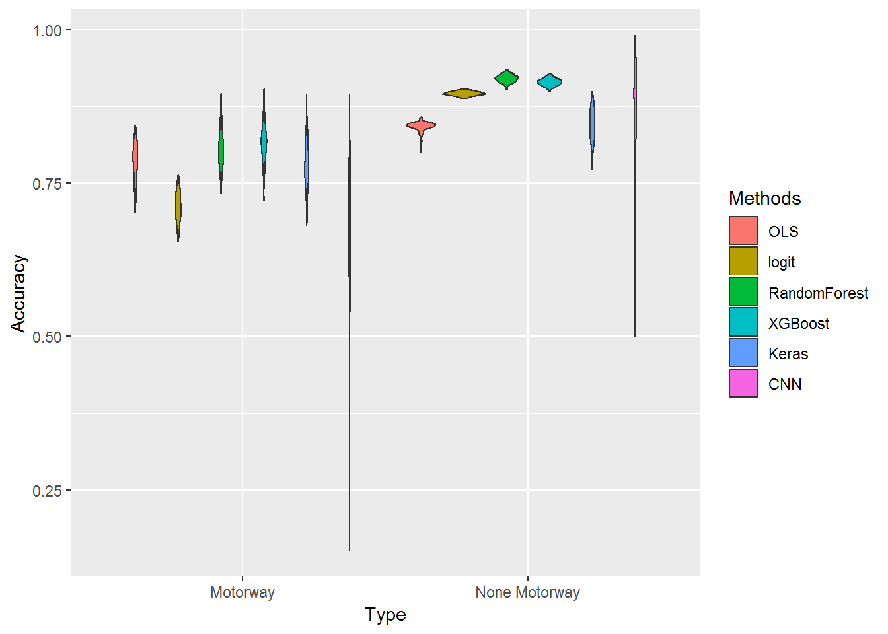

Chapter 4 Basic Analysis
First, I will look at one satellite picture to show the general procedure.
According to the Landsat website the pixel_qa band has a more accurate prediction for identifying clouds, cloud shadows, water, and snow.
Rcpp::sourceCpp("cppsource/table_cpp.cpp")
cloud_identification <- raster("E:/landsatscene/LT051940232011072701T1-SC20180926185810/LT05_L1TP_194023_20110727_20180312_01_T1_pixel_qa.tif")
cloud_identification_cropped <- crop(cloud_identification,st_transform(mv,crs=proj4string(cloud_identification)))
mv_raster <- fasterize::fasterize(st_transform(mv,crs=proj4string(cloud_identification)),cloud_identification_cropped)
cloud_identification_masked <- mask(cloud_identification_cropped,mv_raster)
cloud_identification_values <- getValues(cloud_identification_masked)
none_clear_values <- c(96, 112, 160, 176, 224, 68, 72, 80, 96, 112, 132, 136, 144, 160, 176,224,72, 136,68, 132,80, 112, 144, 176)
cloud_identification_values_2 <-
ifelse(cloud_identification_values %in% none_clear_values,0,
ifelse(is.na(cloud_identification_values),NA,1))
cloud_identification_2 <- setValues(cloud_identification_masked,cloud_identification_values_2)
cbind(table_cpp(cloud_identification_values_2[!is.na(cloud_identification_values_2)]) %>%
do.call(rbind,.),c(sum(is.na(cloud_identification_values_2)),NA)) %>%
t %>%
as.data.frame %>%
mutate(lengths = 100*lengths/sum(lengths)) %>%
rename(Percentage = lengths,
Values = values) %>%
kable(caption="Coverage for different values. `NA` are the rims of the picture, 0 is cloud covered, and 1 is free sight.")| Percentage | Values |
|---|---|
| 28.96906 | 0 |
| 28.16872 | 1 |
| 42.86222 | NA |
motorways_sf <- spTransform(motorways,CRS(proj4string(cloud_identification_2))) %>%
gBuffer(width = 1) %>%
st_as_sf()
motorways_raster <- fasterize::fasterize(motorways_sf,
cloud_identification_2)
covered_by_road <- mask(cloud_identification_2,motorways_raster) %>%
getValues() %>%
is.na() %>%
`!` %>%
which()
cloud_identification_values_3 <- ifelse(is.na(cloud_identification_values_2),0,cloud_identification_values_2)listed_raster <- list.files("E:/landsatscene/LT051940232011072701T1-SC20180926185810/",pattern="band[0-9].tif$",full.names = TRUE)
values_df <- lapply(listed_raster,function(ra1_path) {
ra1 <- raster(ra1_path)
ra1_cropped <- crop(ra1,st_transform(mv,crs=proj4string(ra1)))
ra1_cropped_masked <- mask(ra1_cropped,mv_raster)
ra1_cropped_masked_cloudless <- setValues(ra1_cropped_masked,ifelse(getValues(ra1_cropped_masked)*cloud_identification_values_3==0,NA,getValues(ra1_cropped_masked)))
getValues(ra1_cropped_masked_cloudless)
}) %>%
do.call(cbind,.) %>%
as.data.frame()
values_df$motorway <- 0
values_df$motorway[covered_by_road] <- 1
identify_na <- sapply(paste0("V",1:6),function(x) {
values_df[,x] %>%
is.na() %>%
which()
}) %>%
unlist() %>%
unique()
if (length(identify_na) > 0) {
values_df <- values_df %>%
dplyr::slice(-identify_na)
}
norm_mean <- function(x) {
(x-mean(x))/(max(x)-min(x))
}
values_df[,paste0("V",1:6)] <- values_df[,paste0("V",1:6)] %>%
apply(2,norm_mean)train_and_test_data <- function(seed,df,trainsize=0.8,
replace_motorway=TRUE,
sample_size=1e4,
sample_test=1e4) {
set.seed(seed)
df$motorway <- as.factor(df$motorway)
motorway_pixel <- which(df$motorway==1)
no_motorway_pixel <- which(df$motorway==0)
sampled_motorway_pixel <- sample(motorway_pixel,
round(trainsize*length(motorway_pixel)))
sampled_no_motorway_pixel <- sample(no_motorway_pixel,
round(trainsize*length(no_motorway_pixel)))
test_motorway_pixel <- motorway_pixel[!motorway_pixel %in%
sampled_motorway_pixel]
test_no_motorway_pixel <- no_motorway_pixel[!no_motorway_pixel %in%
sampled_no_motorway_pixel]
values_df_train <- df[c(sampled_motorway_pixel,sampled_no_motorway_pixel),]
values_df_test <- df[c(test_motorway_pixel,test_no_motorway_pixel),]
# train
if (replace_motorway) {
selected_motorway <- sample(sampled_motorway_pixel,sample_size,replace=TRUE)
selected_non_motorway <- sample(sampled_no_motorway_pixel,sample_size)
} else {
selected_motorway <- sampled_motorway_pixel
selected_non_motorway <- sample(sampled_no_motorway_pixel,sample_size)
}
subset <- c(selected_non_motorway,selected_motorway)
values_df_model <- dplyr::slice(values_df,subset)
# test
subset_test <- c(test_motorway_pixel,sample(test_no_motorway_pixel,
sample_test))
values_df_test <- dplyr::slice(values_df,subset_test)
list(train=values_df_model,
test=values_df_test)
}set.seed(15)
random_number <- sample(1e5,100)generated <- lapply(random_number,function(x) {
train_test_list <- train_and_test_data(seed = x,
df = values_df,
trainsize = 0.8,
sample_size = 1e4,
sample_test = 1e4)
values_df_model <- train_test_list$train
values_df_test <- train_test_list$test
# model
model_linear <- lm(motorway~V1+V2+V3+V4+V5+V6,data=values_df_model)
# predict
values_df_test$predicted <- predict(model_linear,values_df_test)
values_df_test <- values_df_test %>%
mutate(predicted_binary = as.numeric(predicted>0.5),
equal = as.numeric(motorway==predicted_binary))
values_df_test %>%
dplyr::rename(Type=motorway) %>%
group_by(Type) %>%
summarise(Value = sum(equal)/n()) %>%
mutate(Type=ifelse(Type==1,"motorway_accuracy","none_motorway_accuracy"))
}) %>%
do.call(rbind,.)generated_rf <- lapply(random_number,function(x) {
values_df$motorway <- as.factor(values_df$motorway)
train_test_list <- train_and_test_data(seed = x,
df = values_df,
trainsize = 0.8,
replace_motorway = FALSE,
sample_size = 1e3,
sample_test = 1e4)
values_df_model <- train_test_list$train
values_df_test <- train_test_list$test
# train
model_rf<-randomForest(
formula = motorway~V1+V2+V3+V4+V5+V6,
data= values_df_model,
ntree=500,
importance=TRUE)#,
# predict
values_df_test$predicted <- predict(model_rf,values_df_test %>%
dplyr::select(paste0("V",1:6),motorway))
values_df_test2 <- values_df_test %>%
mutate(equal = as.numeric(motorway==predicted))
values_df_test2 %>%
dplyr::rename(Type=motorway) %>%
group_by(Type) %>%
summarise(Value = sum(equal)/n()) %>%
mutate(Type=ifelse(Type==1,"motorway_accuracy","none_motorway_accuracy"))
}) %>%
do.call(rbind,.)generated_xgb <- lapply(random_number,function(x) {
train_test_list <- train_and_test_data(seed = x,
df = values_df,
trainsize = 0.8,
replace_motorway = FALSE,
sample_size = 1e3,
sample_test = 1e4)
values_df_model <- train_test_list$train
values_df_test <- train_test_list$test
train_dat<-xgb.DMatrix(
data = values_df_model %>%
dplyr::select(paste0("V",1:6)) %>%
as.matrix(),
label = values_df_model %>%
dplyr::select(motorway) %>%
unlist)
model_xgboost<-xgboost(data = train_dat, # the data
nrounds=1000,
eta=0.025,
subsample=0.63,
lamba=0.001,
objective = "binary:logistic")
test_dat<-xgb.DMatrix(
data = values_df_test %>%
dplyr::select(paste0("V",1:6)) %>%
as.matrix(),
label = values_df_test %>%
dplyr::select(motorway) %>%
unlist)
values_df_test$predicted <- predict(model_xgboost,test_dat)
values_df_test2 <- values_df_test %>%
mutate(predicted_binary = as.numeric(predicted>0.5),
equal = as.numeric(motorway==predicted_binary))
values_df_test2 %>%
dplyr::rename(Type=motorway) %>%
group_by(Type) %>%
summarise(Value = sum(equal)/n()) %>%
mutate(Type=ifelse(Type==1,"motorway_accuracy","none_motorway_accuracy"))
}) %>%
do.call(rbind,.)generated_keras <- lapply(random_number,function(x) {
train_test_list <- train_and_test_data(seed = x,
df = values_df,
trainsize = 0.8,
replace_motorway = TRUE,
sample_size = 2e4,
sample_test = 1e4)
values_df_model <- train_test_list$train
values_df_test <- train_test_list$test
model <- keras_model_sequential()
model %>%
layer_dense(units = 256, activation = 'elu',
input_shape = c(6),kernel_regularizer = regularizer_l2(0.001)) %>%
layer_dense(units = 128, activation = 'elu',
input_shape = c(6),kernel_regularizer = regularizer_l2(0.001)) %>%
layer_dense(units = 64, activation = 'elu',
input_shape = c(6),kernel_regularizer = regularizer_l2(0.0001)) %>%
layer_dense(units = 32, activation = 'elu',
input_shape = c(6),kernel_regularizer = regularizer_l2(0.0001)) %>%
layer_dense(units = 16,activation = 'elu',
input_shape = c(6),kernel_regularizer = regularizer_l2(0.0001)) %>%
layer_dense(units = 8, activation = 'elu',
kernel_regularizer = regularizer_l2(0.0001)) %>%
layer_dense(units = 4, activation = 'elu',
kernel_regularizer = regularizer_l2(0.0001)) %>%
layer_dense(units = 3, activation = 'elu',
kernel_regularizer = regularizer_l2(0.0001)) %>%
layer_dense(units = 2, activation = 'sigmoid')
model %>%
compile(
loss = 'binary_crossentropy',
#loss = 'categorical_crossentropy',
# optimizer= 'rmsprop',
optimizer = 'adam',
metrics = c('accuracy'))
k_set_value(model$optimizer$lr, 0.00001)
k_set_value(model$optimizer$decay, 0.00001/100)
history <- model %>%
fit(
x = values_df_model %>%
dplyr::select(paste0("V",1:6)) %>%
apply(2,as.numeric),
y = values_df_model %>%
dplyr::select(motorway) %>%
apply(2,as.numeric)%>%
to_categorical(),
epochs = 60, batch_size = 30,
validation_split = 0.1)
predicted <- model %>%
predict(values_df_test %>%
dplyr::select(paste0("V",1:6)) %>%
apply(2,as.numeric))
values_df_test$predicted <- predicted[,2]
values_df_test2 <- values_df_test %>%
mutate(predicted_binary = as.numeric(predicted>0.5),
equal = as.numeric(motorway==predicted_binary))
values_df_test2 %>%
dplyr::rename(Type=motorway) %>%
group_by(Type) %>%
summarise(Value = sum(equal)/n()) %>%
mutate(Type=ifelse(Type==1,"motorway_accuracy","none_motorway_accuracy"))
}) %>%
do.call(rbind,.)list.files("output/one_scene_model_eval/",full.names=TRUE) %>%
lapply(function(x) {
dat <- read.csv(x)
dat$Estimator <- x %>%
strsplit("/") %>%
lapply(`[`,3) %>%
unlist %>%
gsub(".csv","",.)
dat
}) %>%
do.call(rbind,.) %>%
ggplot() +
geom_violin(aes(x=Type,y=Value,fill=Estimator))